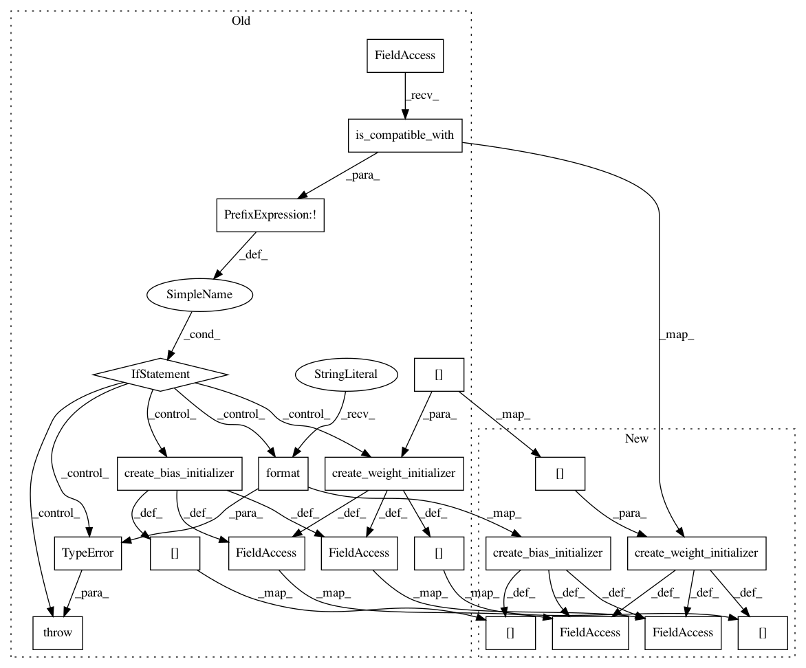

13c724a1b3dad1d5eddb51b851c39671982dbb69,sonnet/python/modules/conv.py,Conv3D,_build,#Conv3D#Any#,2733
Before Change
else:
input_channels = self._input_shape[4]
if not tf.float32.is_compatible_with(inputs.dtype):
raise TypeError(
"Input must have dtype tf.float32, but dtype was {}".format(
inputs.dtype))
weight_shape = (
self._kernel_shape[0],
self._kernel_shape[1],
self._kernel_shape[2],
input_channels,
self.output_channels)
bias_shape = (self.output_channels,)
if "w" not in self._initializers:
self._initializers["w"] = create_weight_initializer(weight_shape[:4])
if "b" not in self._initializers and self._use_bias:
self._initializers["b"] = create_bias_initializer(bias_shape)
self._w = tf.get_variable("w",
shape=weight_shape,
initializer=self._initializers["w"],
partitioner=self._partitioners.get("w", None),
regularizer=self._regularizers.get("w", None))
outputs = tf.nn.convolution(inputs, self._w, strides=self._stride,
padding=self._padding, dilation_rate=self._rate)
if self._use_bias:
self._b = tf.get_variable("b",
shape=bias_shape,
initializer=self._initializers["b"],
partitioner=self._partitioners.get("b", None),
After Change
bias_shape = (self.output_channels,)
if "w" not in self._initializers:
self._initializers["w"] = create_weight_initializer(weight_shape[:4],
dtype=inputs.dtype)
if "b" not in self._initializers and self._use_bias:
self._initializers["b"] = create_bias_initializer(bias_shape,
dtype=inputs.dtype)
self._w = tf.get_variable("w",
shape=weight_shape,
dtype=inputs.dtype,
initializer=self._initializers["w"],
partitioner=self._partitioners.get("w", None),
regularizer=self._regularizers.get("w", None))
outputs = tf.nn.convolution(inputs, self._w, strides=self._stride,
padding=self._padding, dilation_rate=self._rate)
if self._use_bias:
self._b = tf.get_variable("b",
shape=bias_shape,
dtype=inputs.dtype,
initializer=self._initializers["b"],
In pattern: SUPERPATTERN
Frequency: 4
Non-data size: 21
Instances
Project Name: deepmind/sonnet
Commit Name: 13c724a1b3dad1d5eddb51b851c39671982dbb69
Time: 2017-12-18
Author: noreply@google.com
File Name: sonnet/python/modules/conv.py
Class Name: Conv3D
Method Name: _build
Project Name: deepmind/sonnet
Commit Name: 13c724a1b3dad1d5eddb51b851c39671982dbb69
Time: 2017-12-18
Author: noreply@google.com
File Name: sonnet/python/modules/conv.py
Class Name: Conv2D
Method Name: _build
Project Name: deepmind/sonnet
Commit Name: 13c724a1b3dad1d5eddb51b851c39671982dbb69
Time: 2017-12-18
Author: noreply@google.com
File Name: sonnet/python/modules/conv.py
Class Name: Conv1D
Method Name: _build
Project Name: deepmind/sonnet
Commit Name: 13c724a1b3dad1d5eddb51b851c39671982dbb69
Time: 2017-12-18
Author: noreply@google.com
File Name: sonnet/python/modules/conv.py
Class Name: CausalConv1D
Method Name: _build